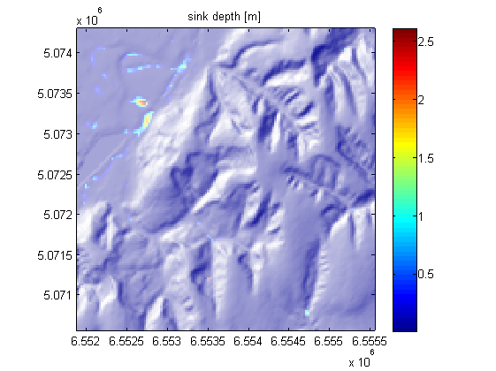
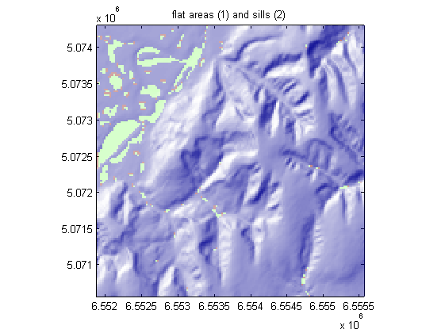

User Guide to TopoToolbox - Processing flats
Flat areas are challenging when calculating flow directions in a DEM since flow directions cannot be derived from a simple neighborhood search. Thus, different techniques exist to process flats and some of them are implemented in TopoToolbox.
Note that you should have Matlab R2011b to run this demo.
Contents
Identify flats
Hydrological conditioning is usually applied to preprocessing a DEM. The most common technique is sink filling (fillsinks) to remove spurious pits. Sink filling, in turn creates flats.
Let's first load the Baranja Hill model
load baranja_hill surf(X,Y,dem); exaggerate(gca,1); shading interp; camlight % for zooming extent = {[6551884,6553799.03205128],[5072228.94341349,5074170.03032261]};

The first step is to fill all sinks. We can calculate the fill depth by subtracting the filled DEM from the original DEM.
demf = fillsinks(dem);
DZ = demf-dem;
imageschs(X,Y,dem,DZ);
colorbar
title('sink depth [m]')
 We can also create a mask that indicates flat pixels using the function identifyflats. You can see that there are various flat areas with different extents. Some of them are single pixels only, others comprise large contiguous areas. As long as flats are not regional minima, each flat should have one or several sills pixels, e.g. pixels adjacent to flats with a downward neighbor.
[FLATS,SILLS] = identifyflats(demf);
imageschs(X,Y,dem,FLATS+2*SILLS);
title('flat areas (1) and sills (2)')
 Three methods to process flats
There a three methods implemented in TopoToolbox to process flats.
- crossflats
- routeflats
- routegeodesic
All of them are called from within flowdir or flowdir_single.
Crossflats
crossflats is the most basic way to process flats. Basically, it doesn't even try to assign flow directions to flat pixels, but it just establishes flow connectivity between pixels entering flats and sill pixels.
Mc = flowdir(X,Y,demf,'routeflats','cross','type','single'); imageschs(X,Y,dem); hold on gplot(Mc,[X(:) Y(:)],'k'); hold off setextent(extent)

While this is a fast method to route through flats, it may not be suited for many applications and visualizations.
Routeflats
routeflats uses a recursive upstream processing to establish flow paths through flats. The algorithm starts at sill pixels and then finds its way upstream. The advantage of the algorithm is its speed. It is reasonably fast and would be even faster, if it was implemented as MEX-file. Its major disadantage is, that it doesn't process flats that are connected to the edge of the DEM.
Mr = flowdir(X,Y,demf,'routeflats','route','type','single'); imageschs(X,Y,dem); hold on gplot(Mr,[X(:) Y(:)],'k'); hold off setextent(extent)

Routegeodesic
The most elegant way to route through flats is implemented in routegeodesic. The algorithm uses an auxiliary topography in flats based on least cost paths where the costs are calculated from the complemented distance transform. This generates flow paths that run along the centerline of sinks and produces the best looking and probably most realistic flow path representation through flat areas.
Mg = flowdir(X,Y,demf,'routeflats','geodesic','type','single'); imageschs(X,Y,dem); hold on gplot(Mg,[X(:) Y(:)],'k'); hold off setextent(extent)

Compare the three
Now let's visually compare the three algorithms using flow accumulation.
Ac = flowacc(Mc,size(dem)); Ar = flowacc(Mr,size(dem)); Ag = flowacc(Mg,size(dem)); figure surf(X,Y,dem,log(Ac)); exaggerate(gca,1); shading interp; camlight title('crossflats') figure surf(X,Y,dem,log(Ar)); exaggerate(gca,1); shading interp; camlight title('routeflats') figure surf(X,Y,dem,log(Ag)); exaggerate(gca,1); shading interp; camlight title('routegeodesic')


close all
History
This user guide was updated last: November 1, 2011.